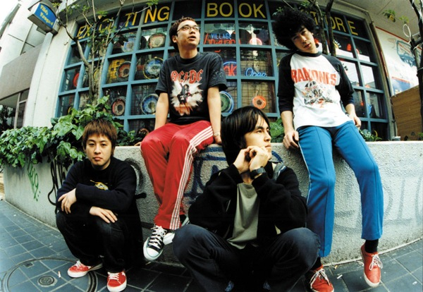
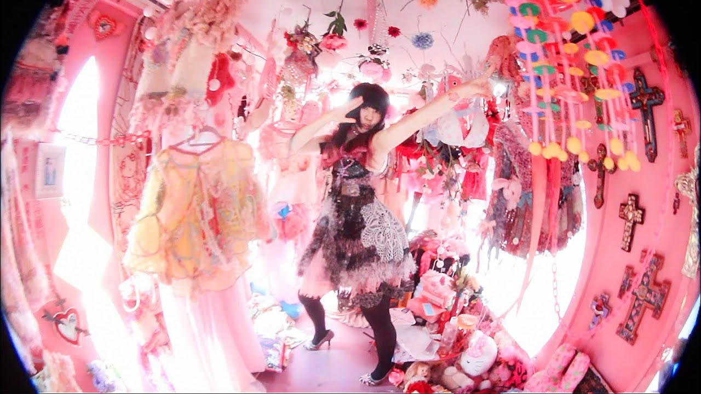

私の好きな音楽は主に邦ロックです。
その中で特に好きなアーティストと曲を絞って紹介していきたいと思います
一つ目は銀杏BOYSというバンドです。
銀杏BOYSを知ったのは中学三年生の受験真っ只中にYOUYUBEのおすすめに流れてきたことがきっかけです。
私の思うこのバンドの魅力はごちゃごちゃしている所です。
中でも一番好きな曲は「人間」です。
歌詞が単調かつ一曲１０分間という嫌いな人からすれば地獄みたいな曲です。
しかし単調な歌詞でも想いが伝わるような、叫び声のような歌い声に惹かれます。
２つ目は大森靖子というアーティストです。
大森靖子も中学生の頃に初めて知って未だに聴き続けています。
どこかふわふわしていて色んな可愛いを基調としている曲がたくさんあります
特に好きな曲は「劇的JOY!ビフォーアフター」と「■ックミー、■ックミー、」などです。
曲調と歌詞が不思議な感じで飽きずに何回でも聴いてしまう曲です。
他にも色んな音楽を聴いています。
アーバンギャルド、モーモールルギャバン、挫・人間、神聖かまってちゃん、椎名林檎、トップシークレットマン、相対性理論 etc...
邦ロック好きの方がいれば是非話してみたいです。